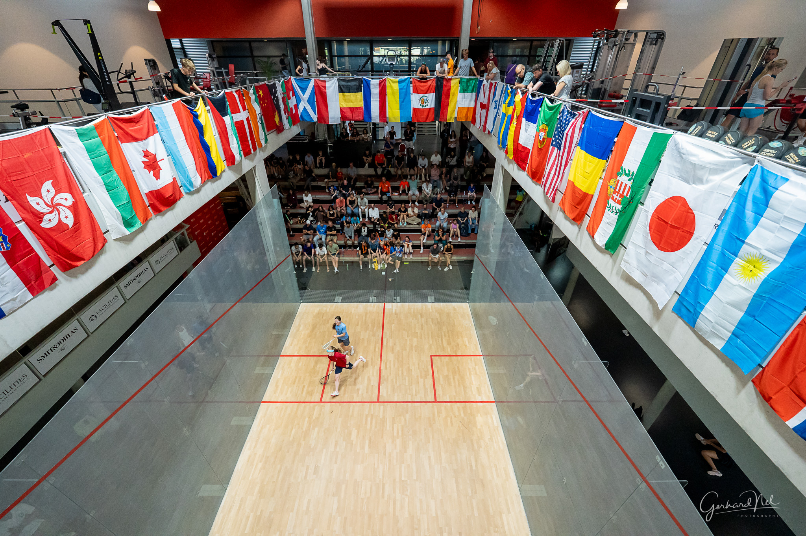
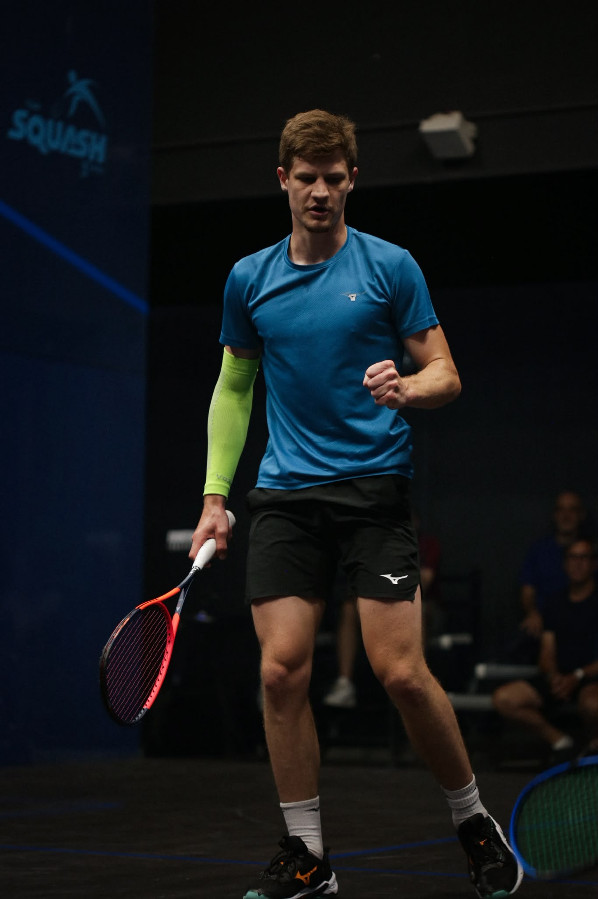
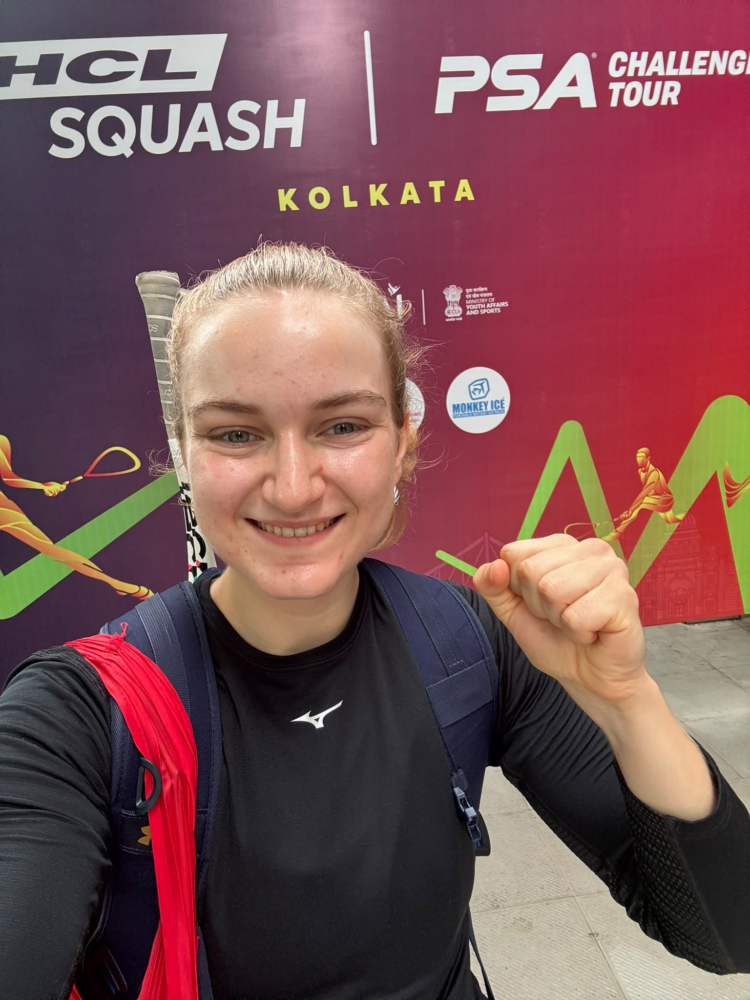
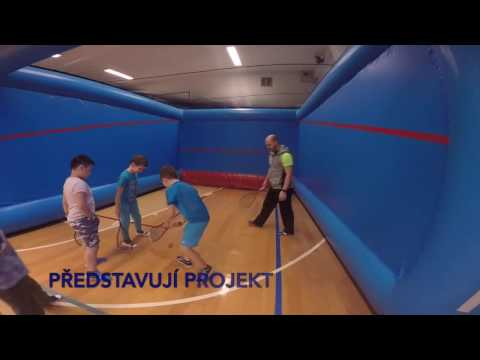
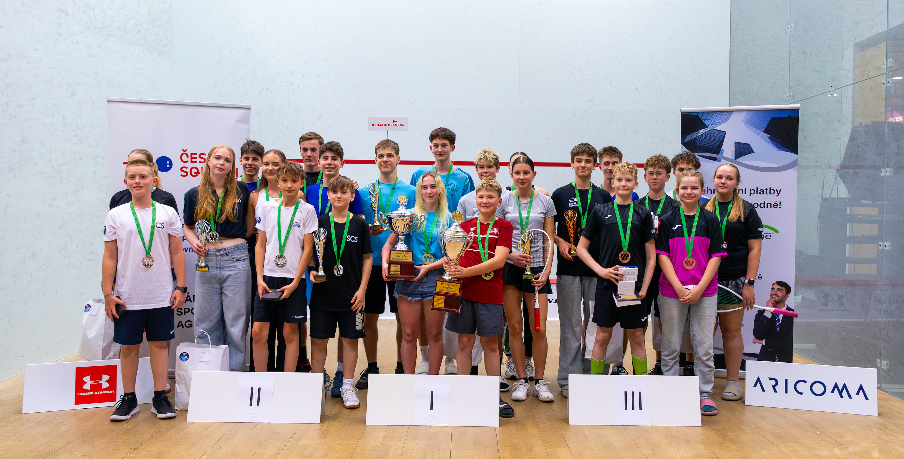
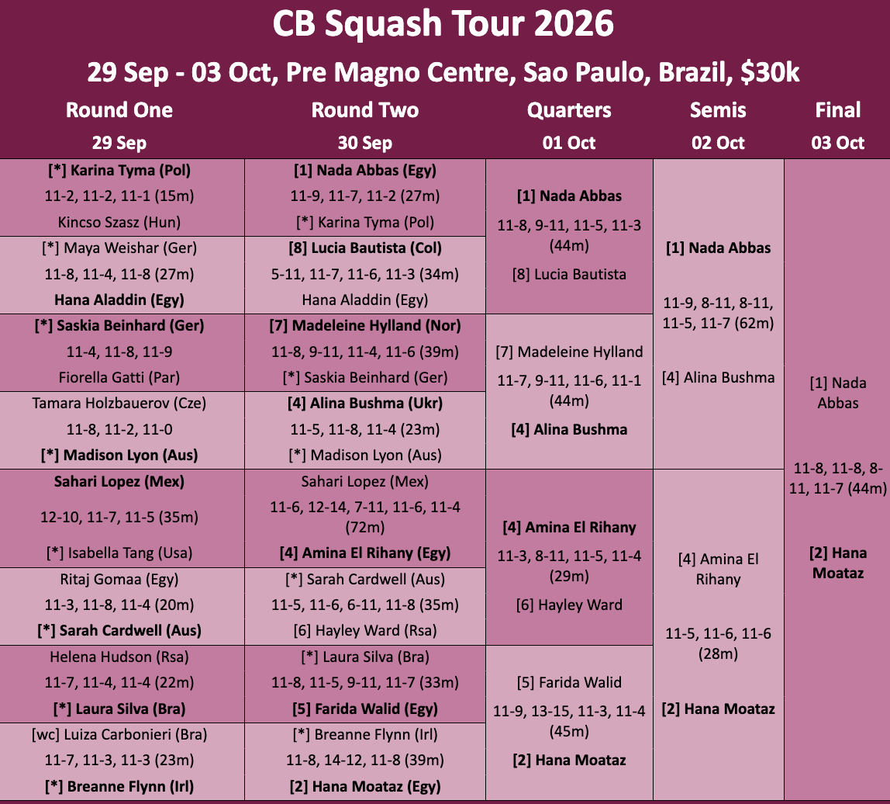

Komponenta — hlavní číslo hráče
.player-metric__valueÚprava: --type-player-stat-size / --type-player-stat-leading108.
72 komponent · 18 sjednocení
Žádná komponenta neodpovídá hledání. Zkuste jiný název nebo vymažte hledání.
#eff6ff--color-blue-50#1447e6--color-blue-700#1c398e--color-blue-900#162456--color-blue-950#ff6467--color-red-400#c10007--color-red-700#15803d--color-success-700#82181a--color-red-900#fafaf9--color-stone-50#f5f5f4--color-stone-100#e7e5e4--color-stone-200#d6d3d1--color-stone-300#79716b--color-stone-500#1c1917--color-stone-900#fff--color-whiteHodnoty z CSS odpovídají assets/desing-tokens/colors.json; Blue 50 je schválený doplněk pro focus polí.
Společná hierarchie H1–H6, základní texty a hlavní komponentové výjimky. Každá role má jednu ukázku; její společné nastavení platí na celém webu.
| Role / ukázka | Desktop ≥ 1200 px | Tablet 768–1199 px | Mobil < 768 px | V prohlížeči |
|---|---|---|---|---|
| Komponenta — hlavní číslo hráče | 64 / 72 | 64 / 72 | 48 / 56 | Změří prohlížeč |
| H1 — hlavní nadpis | 40 / 48 | 40 / 48 | 32 / 40 | Změří prohlížeč |
| H2 — nadpis sekce | 32 / 40 | 32 / 40 | 24 / 32 | Změří prohlížeč |
| H3 — podnadpis | 24 / 32 | 24 / 32 | 24 / 32 | Změří prohlížeč |
| H4 — nadpis čtvrté úrovně | 20 / 28 | 20 / 28 | 20 / 28 | Změří prohlížeč |
| H5 — nadpis páté úrovně | 18 / 28 | 18 / 28 | 18 / 28 | Změří prohlížeč |
| H6 — nadpis šesté úrovně | 18 / 28 | 18 / 28 | 18 / 28 | Změří prohlížeč |
| Základní text | 16 / 28 | 16 / 28 | 16 / 28 | Změří prohlížeč |
| Redakční text | 18 / 32 | 18 / 32 | 16 / 28 | Změří prohlížeč |
| Perex | 24 / 32 | 24 / 32 | 20 / 32 | Změří prohlížeč |
| Popisek a poznámka | 14 / 22 | 14 / 22 | 14 / 22 | Změří prohlížeč |
| Komponenta — titulek hlavní aktuality | 40 / 48 | 32 / 40 | 32 / 40 | Změří prohlížeč |
| Komponenta — titulek článkové karty | 24 / 32 | 24 / 32 | 20 / 28 | Změří prohlížeč |
| Komponenta — malé sekční záhlaví | 20 / 28 | 20 / 28 | 18 / 26 | Změří prohlížeč |
| Komponenta — drobný nadpis patičky | 14 / 22 | 14 / 22 | 14 / 22 | Změří prohlížeč |
.player-metric__valueÚprava: --type-player-stat-size / --type-player-stat-leadingh1Úprava: --type-page-title-size / --type-page-title-leadingh2Úprava: --type-content-title-size / --type-content-title-leadingh3Úprava: --type-content-subtitle-size / --type-content-subtitle-leadingh4Úprava: --type-content-minor-title-size / --type-content-minor-title-leadingh5Úprava: --type-content-small-title-size / --type-content-small-title-leadingh6Úprava: --type-content-smallest-title-size / --type-content-smallest-title-leadingbodyÚprava: --type-body-size / --type-body-leadingInformace o českém squashi, klubech a soutěžích.
.proseÚprava: --type-prose-size / --type-prose-leadingSouvislý text pro pohodlné čtení. Tučné zvýraznění i kurzíva zachovávají jeho velikost.
.text-article__leadÚprava: --type-lead-size / --type-lead-leadingÚvodní odstavec představuje téma stránky.
.editorial-photo figcaption, .noteÚprava: --type-note-size / --type-note-leading.hero__content h2Úprava: --type-hero-title-size / --type-hero-title-leading.article-card :is(h2, h3)Úprava: --type-article-title-size / --type-article-title-leading.section-heading h2Úprava: --type-section-title-size / --type-section-title-leading.footer-column h2, .partner-group h2, .newsletter h2Úprava: --type-small-title-size / --type-small-title-leadingČeská telefonní čísla se zapisují jako +420 NNN NNN NNN; vytáčecí odkazy tel: zůstávají bez mezer.
H1–H6 tvoří výchozí hierarchii běžného obsahu. Komponentové titulky mají výslovné role, aby například nadpis patičky nebo titulek karty neměnil velikost při úpravě obsahového H2. Nastavení se mění ve společných typografických proměnných v assets/css/site.css; u každé ukázky je uvedená příslušná role. Další komponentové role jsou card-title pro běžné karty a obsahová videa, panel-title pro kompaktní obsahové nadpisy a compact-title pro akce a kompaktní videa. Varianty a úplné použití jsou u příslušných komponent katalogu.
Živé měření čte velikost, výšku řádku a váhu při aktuální šířce okna. H1 používá izolovaný Shadow DOM se stejným stylesheetem a breakpointy. Barvu běžných nadpisů řídí --type-heading-color; konkrétní úroveň lze upravit v globálním pravidle H1–H6. Komponentové role zachovávají vlastní barvy. Rozestupy a zalamování dál určuje kontext. Náhledy jsou neinteraktivní; bez JavaScriptu zůstávají referenční hodnoty a ukázky dostupné. Lokální Vend Sans: řezy 400, 600 a 700.
--space-4--space-8--space-12--space-16--space-24--space-32--space-40--space-48--space-64--space-80| Role / proměnná | Desktop | Tablet | Mobil | Použití |
|---|---|---|---|---|
Začátek stránky--space-page-start | 40px | 40px | 24px | .text-page, .listing-pageHorní odsazení obsahu |
Konec stránky--space-page-end | 80px | 80px | 48px | .text-page, .listing-pageDolní odsazení obsahu |
Vnitřek karet s linkou--space-accent-card-inset | 24px | 24px | 24px | .accent-cardRozcestníky, kluby, reprezentace a kontakty |
Pod titulkem karty--space-accent-card-title | 24px | 24px | 24px | .accent-card > h2, .accent-card > h324 px; jméno a funkce tvoří dvojici s vnitřní mezerou 8 px |
Vnitřek panelu údajů--space-fact-panel-inset | 32px | 32px | 24px | .fact-panelVšechny varianty panelu |
Sloupce detailu--space-detail-columns | 64px | 32px | 32px | .detail-layoutMezera mezi sloupci i po složení pod sebe |
Bloky redakčního textu--space-prose-block | 24px | 24px | 24px | .prose p, .prose ul, .prose olDolní odstup; poslední blok zůstává bez něj |
Obsahové sekce--space-content-section | 48px | 48px | 32px | .content-sectionHorní odstup navazující sekce |
| Základ | Aktuální hodnota | Kontext |
|---|---|---|
| Obsahový kontejner | max. 1280 px | .container; --content-width |
| Gutter | 32 px; pod 768 px 16 px | --page-gutter |
| Header | 121 px; pod 1200 px 72 px | --header-height |
| Čtecí sloupec | max. 840 px | .text-article, .page-heading |
| Řádek a záhlaví datové tabulky | 48px | --table-row-height; společný data-table. Víceřádkový obsah může růst; měsíční matice historie má vlastní geometrii. |
| Mřížky | 12 / 3 / 4 / 2 sloupce podle komponenty | Nejde o jednu univerzální grid utility. |
| Radius | 4 px / 2 px / 50 % | Pole a tlačítka / ilustrační štítek / mapový marker |
| Stín karty | 0 2px 2px + 0 2px 16px | Stone500 s alpha 0,05; bez šedého obrysu filtrů, fact-panelů a partnerů. Accent-card zachovává 3px horní Blue900 linku. |
| Stín headeru | 0 2px 2px + 0 2px 16px | Stone500 s alpha 0,1 |
| Datový marker poháru | 16 × 16 px; tah 1 px | Schválená výjimka pro nejlepší pořadí v grafu a historii; běžné UI ikony zůstávají 24px. |
| Základní pohyb | 280 ms | --motion-interactive; cubic-bezier(0.22, 1, 0.36, 1) |
| Další přechody | 180 / 350 / 700 ms | Header / ovládání hero / pohyb hero |
| Reduced motion | 0,01 ms; smooth scroll vypnutý | Společné CSS omezuje přechody, animace a vybrané hover transformace. |
| Textový odkaz | underline 1 px, offset 4 px | Každý běžný a[href]; Blue900 → Blue700 při hoveru/focusu |
| Focus odkazu | 3 px Blue700, offset 3 px | Na modrém hero/streamu bílý; tlačítka zachovávají vlastní focus |
| Obecný focus | 3 px Red400, offset 3 px | Obecné neodkazové ovladače; členské přihlášení |
| Focus pole | 1 px Blue700 border + 2 px Blue50 halo | Input/select/newsletter; outline offset 0 |
| Focus filtrační akce | 3 px Blue700, offset 3 px | Filtry, reset a stránkování |
| Číselné buňky | font-variant-numeric: tabular-nums | Výslovné tabular-nums a stávající numeric; zarovnání se nemění |
Škála --space-* definuje základní rozestupy. Společné role odkazují na škálu a řídí pouze uvedené komponenty; stejné číslo samo o sobě neznamená stejnou roli. Ostatní mezery používají přímo škálu. Specifické hodnoty mimo škálu, geometrie, radiusy a stíny zůstávají u komponent. Tabulka čte hodnoty z CSS pro desktop 1344 px, tablet 768 px a mobil 390 px. Role sloupců detailu se mění pod 1200 px, role stránky, panelu a sekce pod 768 px. Gutter zůstává vlastní proměnnou --page-gutter (32 / 16 px).
.ui-icon používá lokální SVG masky a dědí currentColor. Ikony pocházejí z IconJaru: Hugeicons Pro → Stroke → Rounded; šipky a chevron používají variantu Stroke → Standard. Používají viewBox 0 0 24 24 a tah 1 px; běžný blok má --icon-size: 24px, ikony externího odkazu, kopírování a hledání mají 16 × 16 px; tlačítka zachovávají přístupné názvy. Výslovná varianta .ui-icon--feature zvětšuje stejný 24px viewBox na 48 × 48 px, takže 1px zdrojový tah má výsledné 2 px; běžné ikony se nemění.
.section-action__icon sdílí arrow-right-02 se stránkováním. Pozadí selectu používá arrow-down-01 a datumové pole calendar-02 ve stejném bloku 24 × 24 px. Loga, mapa a dekorace tvoří samostatné assety.
.buttonVýška nejméně 48 px, text 16/22, padding 12/16 px. Stejná velikost platí i pro filtry, reset, mapové akce a stránkování bez závislosti na obalu.
.button.button--smallbutton + button--small: výška nejméně 40 px, text 14/22, padding 8/16 px. Modrý focus je shodný s běžným tlačítkem.
.button.button--memberPůvodní červená členská varianta: 40 px, text 14/22, původní focus. Tato dávka sjednocuje modrá tlačítka.
.button.button--secondaryStejná velikost 48 px / 16/22 jako ve zdrojových filtrech. Obrysová varianta mění povrch, ne rozměry ani viditelný focus.
.newsletterPůvodní disabled stav včetně přístupného vysvětlení. Odesílání není implementované.
a[href]Skutečný odkaz bez třídy: Blue900, podtržení solid 1 px / offset 4 px; hover i klávesnicový focus Blue700. Focus má 3px obrys s offsetem 3 px, na modrém je bílý. Velikost a klikací plochu určuje okolí. text-link zůstává kompatibilní i pro span v celoodkazové kartě. Počty a[href] zahrnují také komponentové výjimky. Nadpisy odkrývají stejnou linku při hoveru/focusu; média a celé karty se nepodtrhávají jako celek.
.section-action.field.field--searchSearch input používá lokální Hugeicons Search 01 Stroke Rounded 16 × 16 px / výsledný tah 1 px. Levý vnitřní odstup 48 px ponechává prostor ikoně; nativní vymazání vpravo používá Hugeicons Cancel 01 v bloku 16 × 16 px.
.fieldZákladní šířka selectu je 240 px; v úzkém prostoru se může zmenšit a na mobilu vyplnit dostupnou šířku.
.field.field--dateSamostatná ukázka vzhledu; validace rozsahu je dostupná na stránce kalendáře.
.filtersZobrazeno: 3 z 3
Zkuste jiné slovo nebo zrušte vybrané filtry.
Filtr tvoří hledání, výběr rubriky a reset. Při nulovém výsledku se zobrazí prázdný stav.
.filter-switchNativní radio skupina s legendou, 48px ovládáním a stejným vzhledem jako match-kind na kartě hráče. Aktivní volba je Blue900, focus Blue700. Počet voleb neurčuje další variantu. Žebříčky používají navazující Okruh / Kategorie / Věková kategorie a Rok / Datum vydání / Hráč nebo klub. Nabídky obsahují pouze připravená vydání, změna kategorie zachová dostupné datum a reset zůstává v aktuální kategorii. Výběr, hledání a stránka se ukládají do URL. Celé funkční filtry patří na zdrojovou stránku.
.copy-value.event-cardMasters
Datum, název, kategorie a kompaktní tlačítko. Turnaj a ligové utkání se liší pouze obsahem. Úplný vodorovný pás je na homepage.
.article-card
Turnaje a soutěže · 05. 10. 2026
Hradec Králové hostil 3.–4. října 131 juniorů. Na turnaji kategorie A se hrálo v deseti kategoriích od U11 do U19.
.article-card
Turnaje a soutěže · 25. 09. 2026
Viktor Byrtus došel do čtvrtfinále turnaje Open de Quebec – Espace Y. V prvním kole měl jako třetí nasazený volný los.
.article-card
Reprezentace · 05. 09. 2026
Zpráva z 5. září shrnula podzimní starty českých hráčů na třech kontinentech. Zahrnovala také klubové mistrovství Evropy v Norimberku.
.article-card
Reprezentace · 22. 08. 2026
Jakub Solnický a Marek Panáček skončili na mistrovství Evropy jednotlivců v Budapešti v první desítce. Karolína Šrámková obsadila třinácté místo.
Jedna komponenta ve 41 výskytech: rám 3:2, titulek 24/32 (mobil 20/28), metadata a popisek. Portrétní či horní ohnisko mění pouze výřez; ilustrační štítek pravdivě označuje původ fotografie. Původní obsah, náhledy, cíle a klikání zachované.
.video-cardSpolečný rám 16:9, datum a titulek 16/24. Modré pozadí je kontext streamu. Náhled i titulek vedou na původní YouTube video; mobilní stream zachovává první dvě karty.
.video-card.video-card--content
Přehrát video Nafukovací squash kurt do ZŠ – Morava na YouTube
Autor: Squash TJ Slovácká Slavia Uherské Hradiště. Zdroj výběru: Squash Viktoria.
video-card + video-card--content: rám 16:9, titulek 24/32, popisek 16/24 a šířka nejvýše 480 px. Starší obraz 4:3 se zobrazuje celý pomocí contain i při hoveru a focusu. Schválená varianta zůstává referenční ukázkou; aktivní stránky ji nyní nepoužívají. Autor, zdroj a původní odkazy zůstávají.
.directory-card.accent-cardNovinky ze vzdělávání a trenérské praxe.
Společný vizuální základ accent-card se stejným stínem jako karta akce. Celá karta zůstává jedním odkazem, akce se zarovnává dolů.
.club-card.accent-cardHradec Králové
Společný základ accent-card. Nadpis je neaktivní ve Stone900; na detail vede standardní tlačítko dole. Mapa zachovává samostatný odkaz; plocha karty není odkaz.
.representative-card.accent-cardSpolečný základ accent-card a seznam fact-list. Profil hráče používá základní modrou button (min. 48 px, text 16/22); tlačítko drží spodní linii karet v každém řádku. Karta má padding 24 px, odstup nadpisu od údajů 24 px a nejméně 24 px mezi údaji a akcí. Mřížka má 3/2/1 sloupce; filtrování nezanechává prázdná místa. Stejný vzor používají týmové karty soutěží se samostatným odkazem na detail. Plocha karty není odkaz.
#sekretariat .contact-person.accent-cardGenerální sekretář
Sdílí accent-card s reprezentantem: bílá plocha, 3px horní linka, stín a padding 24 px. Zachovává nadpis H3, vlastní obsah i samostatné telefonní a e-mailové odkazy; plocha karty není odkaz.
.partner-directory.partner-directory--mainUkázka obsahuje pouze reprezentativní výběr; úplný obsah je dostupný odkazem Ve stránce.
.partner-link.league-groupJeden řádek skupiny ukazuje název soutěže a samostatné akce Rozlosování a Detail soutěže. Rozlosování se zobrazuje pouze u dostupného souboru; úplný seznam soutěží patří na zdrojovou stránku. Ukázka obsahuje pouze reprezentativní výběr; úplný obsah je dostupný odkazem Ve stránce.
[data-hero]Turnaje a soutěže · 27. 06. 2026
Bohužel, Marek Panáček ve svém dosud největším finále kariéry v Madridu na titul nedosáhl, Leandro Romiglio zvítězil po 85 minutách 3/1 na sety.
Reprezentace · 26. 07. 2026
Juniorské mistrovství světa v Kanadě vyvrcholilo finálovými zápasy. Z titulů se radují Indka Anahat Singh a Egypťan Mohamed Zakaria.
ČASQ · 27. 07. 2026
Podpora pomůže trenérům LSCM pokračovat v systematické práci s mladými hráči také v sezoně 2025/2026.
Původní site.js ovládá pouze první data-hero. Zachovat všechny slidy a tlačítka.
.editorial-photo.editorial-photo--framed
.editorial-photo.editorial-photo--graphic.editorial-photo.editorial-photo--upper.editorial-photo.editorial-photo--lowerČlánky používají rám 3:2 s výřezem cover; horní/dolní ohnisko je nastavení obrazu. Grafiky se zobrazují celé pomocí contain. Původní soubory, alternativní texty, výřezy a odkazy na originály se nemění.
.photo-grid
.photo-grid .photo-grid__image--contain
Rám 3:2 a object-fit: cover. Textová grafika má vlastní variantu contain. Kliknutí otevře původní celý obrázek.
.media-story
Pohybová hra, hledání rovnováhy, první úkoly s míčkem. Děti se mohou se squashem seznamovat postupně: přes pohyb a jednoduché pokusy až k raketě a prvním výměnám. Záleží na jejich věku, zkušenostech a programu klubu.
Na tréninku tak může být chvíli důležité trefit míček a jindy zvládnout pohybový úkol společně s ostatními. Děti zkoušejí nové věci, učí se střídat a poznávají, co se jim daří. Další výzva nemusí být větší skóre — může to být další povedený úder.
Při výběru se ptejte, jak klub zapojuje úplné začátečníky a podle čeho sestavuje skupiny. Popište trenérovi také to, co vaše dítě baví a jestli už nějaký sport zkoušelo. Pomůže vám hledat vhodný začátek.
Dva stejně široké sloupce, mezera 40 px. Pod 768 px jeden sloupec a mezera 24 px; pořadí zůstává podle HTML. Katalog reaguje také na dostupnou šířku ukázky pod 640 px.
.proseZápis zachycuje jednání z předchozího dne. Úplný dokument je ke stažení v původní zprávě ČASQ.
.prose.prose--editorČeská asociace squashe připravuje rozvojové projekty pro trenéry a kluby.
Typografie editoru: odstavec a odkazový seznam. Nadpisy sdílejí společné typografické role; média, soubory a poznámky mají vlastní ukázky. Ukázka obsahuje pouze reprezentativní výběr; úplný obsah je dostupný odkazem Ve stránce.
.file-link.file-link--describedVarianta běžného odkazu na soubor s textovým popiskem 16/24 ve Stone900 mezi názvem a metadaty. Zachovává ikonu podle formátu, skutečnou velikost, společný focus a podtržení pouze názvu.
.file-listSeznam souborů vlastní své rozestupy bez závislosti na redakčním obalu. Odkaz uvádí formát a velikost; stejná komponenta odkazuje na PDF, XLSX i CSV a funguje bez JavaScriptu. Ukázka obsahuje pouze reprezentativní výběr; úplný obsah je dostupný odkazem Ve stránce.
.download-cardNeaktivní nadpis a samostatné odkazy na jednotlivé verze. Stejná komponenta drží přílohy u zápisu VV. Velikost souboru se uvádí jen při známé hodnotě.
.faq-listJednotná hranice není. Některé kluby mají i předškolní školičky, jiné přijímají starší děti. O vhodné skupině se poraďte podle věku a zkušeností dítěte přímo v klubu.
Ukázka obsahuje pouze reprezentativní výběr; úplný obsah je dostupný odkazem Ve stránce.
.timelinePočátek 19. století
V londýnské věznici Fleet se hraje Rackets, předchůdce squashe.
Ukázka obsahuje pouze reprezentativní výběr; úplný obsah je dostupný odkazem Ve stránce.
.note.source-noteZdroj fotografií: ČASQ; autor fotografií není uveden.
Atribuce fotografií. Technické helper texty do obsahu nepatří.
.note.snapshot-noteMistrovství republiky juniorů 2026 · fotografie z vyhlášení. Foto: Irena Vanišová / SquashPage.net, zveřejněno na ČASQ.
Poznámka u galerie obsahuje označení akce a autora fotografií.
.table-legendZA — utkání, VY — výhry, PR — prohry, SC — skreče, PZ — zápasy jednotlivců. O pořadí rozhodují nejprve body, poté vyhraná utkání a další kritéria hracího systému.
.team-contextSamostatný fact-panel pod titulkem: odkaz na klub, kapitán, telefon a e-mail. Používá společný fact-list, 24px padding a stín panelu. Desktop má čtyři údaje v jednom řádku, při šesti údajích šest sloupců; tablet má dva sloupce a mobil jeden; statistický souhrn zůstává oddělený mezerou 24 px. Stone200 separátory jsou na desktopu svislé, na tabletu oddělují sloupce i řádky a na mobilu vodorovné.
.club-info-grid .club-info-card.accent-cardTři club-info-card sdílejí accent-card s 3px modrou horní linkou a paddingem 24 px: Základní informace, Kontakty a Domácí kurty. Mřížka má od 1200 px tři sloupce, od 768 px dva a na mobilu jeden. Web a sociální sítě patří do Kontaktů spolu s obecným telefonem a e-mailem klubu. Kapitán patří samostatnému kontextovému panelu pod titulkem detailu týmu, nikoli klubovým údajům, statistickému souhrnu či tabulce týmů. Karty zachovávají vlastní nadpisy a kontaktní či mapové odkazy; plocha není odkaz. Ukázka obsahuje pouze reprezentativní výběr; úplný obsah je dostupný odkazem Ve stránce.
.data-table| Hráč | Akce a datum | Výsledek hráče |
|---|---|---|
| Jáchym Mraček | Hradecko - Pardubický Cup, (B13), 05.09.2015 | 0 : 3 |
Společný základ data-table má řádky i záhlaví vysoké nejméně 48 px podle --table-row-height. Buňky mají padding 8 px svisle / 16 px vodorovně a obsah uprostřed výšky. Platí také pro žebříčky, soupisky, soutěžní tabulky, klubová družstva a kalendář. Víceřádkový obsah může řádek zvětšit bez oříznutí. Měsíční matice hráčské historie je samostatný interaktivní vzor s vlastními rozměry. Pro přehlednost jsou zobrazené první řádky skutečné tabulky.
.data-table.match-games-table| Domácí | Hosté | Výsledek | Průběh setů |
|---|---|---|---|
| Václav Pavlovec | Josef Růžek | 3 : 2 | 3:11, 11:4, 13:15, 11:6, 11:5 |
Sloupce Domácí, Hosté, Výsledek a Průběh setů mají šířky 20/30/14/36 %. Jména mají běžnou váhu, výsledek je Blue900 a 16 px tučně; v každém setu je tučné vyšší číslo. Odkazy vedou na dostupné plné profily. Tabulka má nejméně 720 px a zůstává v pojmenovaném posuvném regionu přístupném klávesnicí. Pro přehlednost jsou zobrazené první řádky skutečné tabulky.
.data-table.ranking-table| Pořadí | Posun | Hráč / hráčka | Klub | Liga | Turnaje | Body celkem | PSA |
|---|---|---|---|---|---|---|---|
| 1. | Marek Panáček | Squash Viktoria, z.s. | 4200 | 22151 | 26351 | 108 |
Nadpis uvádí kategorii a datum k D. M. RRRR s nezalomitelnými mezerami. Jména jsou Jméno Příjmení. Posun sdílí ranking-change: Success700 / šipka nahoru, Red700 / šipka dolů, 24px Hugeicons Standard a přístupný popis. Nula je neutrální, chybějící údaj pomlčka; Body celkem jsou tučné. Datum narození se do veřejného HTML žádné kategorie nezapisuje. Pevné šířky sloupců jsou stejné pro všechny kategorie a filtry: pořadí 80, posun 96, hráč 240, klub 400, bodové složky 120, celkem 128 a další pořadí 96 px. Tabulka dospělých má 1280, juniorů 1136 a masters 944 px podle skutečných sloupců; užší prostor řeší posuvný obal. Hledání i selecty mají základní šířku 240 px. Při přípravě výsledků je obsah označen aria-busy, déle trvající práci oznamuje loading stav a chybu lze opakovat. Pro přehlednost jsou zobrazené první řádky skutečné tabulky.
.data-table.standings-table| Poř. | Družstvo | ZA | VY | PR | SC | PZ | Sety | Skóre | Body |
|---|---|---|---|---|---|---|---|---|---|
| 1. | Viktoria Brno Sportprofit | 1 | 1 | 0 | 0 | 3:0 | 9:0 | 99:35 | 4 |
Deset sloupců tabulky soutěže zachovává pořadí, název týmu a výsledkové hodnoty. Tabulka má minimální šířku 1040 px, název týmu nejméně 280 px; číselné hodnoty jsou vystředěné a body tučné. Původní posuvný obal má pojmenovaný role region a tabindex 0, záhlaví používá scope a zkratky dostupné názvy. Platí společná výška řádku nejméně 48 px. Pro přehlednost jsou zobrazené první řádky skutečné tabulky.
.competition-schedule__round .competition-schedule-table| Soupeři | Čas / výsledek | Místo / pořadatel | Detail |
|---|---|---|---|
| SC Prague United B – SK Poděbrady | 2 : 2 | Squash Ohradní (Squash Ohradní - A) |
Jedno kolo tvoří H4 s číslem kola, českým názvem dne a datem a přístupná posuvná tabulka. Nadpis je od tabulky vzdálený 16 px, kola od sebe 24 px; pořadí je chronologické od nejstaršího. Čtyři sloupce Soupeři, Čas / výsledek, Místo / pořadatel a Detail mají šířky 38/20/32/10 %. Titulky času/výsledku a detailu jsou vizuálně skryté se zachovanými přístupnými názvy. Tabulka má minimální šířku 880 px; čas je na desktopu na jednom řádku a výsledek používá 16 px, váhu 700 a Blue900. Soupeři a detail odkazují pouze na existující cíle. Pojmenovaný region s tabindex 0 zpřístupňuje všechny sloupce i klávesnici. Filtry používají společný form.filters a bez JavaScriptu zůstávají všechny zápasy viditelné. Ukázka obsahuje jeden skutečný řádek kola. Pro přehlednost jsou zobrazené první řádky skutečné tabulky.
.data-table.club-teams-table| Název týmu | Soutěž | Hráčů | Soupiska |
|---|---|---|---|
| Viktoria Brno Sportprofit | Extraliga muži | 11 | Stáhnout soupisku |
Čtyři sloupce Název týmu, Soutěž, Hráčů a Soupiska mají šířky 42/23/13/22 %. Pevný layout a minimální šířka 880 px zachovávají přehlednost; název se může zalomit, ostatní údaje zůstávají na řádku. Soupiska je samostatný XLSX odkaz s ikonou a přístupným názvem konkrétního týmu. Pojmenovaný posuvný region s tabindex 0 zachovává klávesnicový přístup ke všem sloupcům. Platí společná výška řádku nejméně 48 px. Pro přehlednost jsou zobrazené první řádky skutečné tabulky.
.data-table.roster-table.roster-table--statistics| Hráč | Ročník | Na žebříčku | Zápasy | V–P | Sety | Poznámka |
|---|---|---|---|---|---|---|
| Marek Panáček | 2002 | 1+1 | 1 | 1–0 | 3:0 | — |
Sedm sloupců: hráč, ročník, nasazovací pořadí, zápasy, výhry–prohry, sety a poznámka. Pevné šířky 28/9/14/9/9/9/22 %, číselné sloupce uprostřed, nezalamované výsledky. Tabulka má nejméně 800 px v původním přístupném posuvném regionu. Pod 768 px se skrývá pouze posun pořadí, ostatní údaje zůstávají dostupné. Nula a nedostupná hodnota mají odlišný význam. Pro přehlednost jsou zobrazené první řádky skutečné tabulky.
.calendar-month| Termín | Kategorie | Název akce | Místo | Stav / čas |
|---|---|---|---|---|
| Junioři A | Elbe/Labe Junior Squash Open 2026 | Drážďany | Připravuje se |
Jeden skutečný řádek zachycuje datumové buňky a stav akce. Celý kalendář a datumové filtry jsou dostupné přes Ve stránce. Pro přehlednost jsou zobrazené první řádky skutečné tabulky.
.fact-listPopisek 12/18, tučně 700, kapitálky; stejnou definici sdílí fact-label pro samostatné metriky. Hodnota 16/24, mezera mezi nimi 4 px a mezi údaji 16 px. Stejný základ používají panely, karty, detail klubu i seznamy v redakčním textu hráčských profilů, turnajů a utkání. Každý pár dt/dd má vlastní div; nevyžaduje kartu ani nový vizuální modifikátor.
[data-ranking-detail]Samostatná komponenta ranking-tooltip: radius 4 px, padding 16 px, stín 0 4px 5px a 0 4px 40px s krytím 15 %. Silnější stín patří pouze tooltipu; karty používají původní velikost stínu s krytím 5 %. Ukázka zachycuje otevřený stav; interakce jsou v ukázce sportovního profilu. Hover, kliknutí a klávesnice; zavření Esc nebo kliknutím mimo.
.player-identity.fact-panel.player-metric.accent-cardJedna metrika se společným fact-label a velkou číselnou hodnotou. Titulek, číslo s jednotkou a doplňující údaj jsou pod sebou vlevo i na mobilu a v úzkém kontejneru. Ostatní kategorie používají tutéž kartu. Ukázka obsahuje pouze reprezentativní výběr; úplný obsah je dostupný odkazem Ve stránce.
.fact-panel:has(> .rank-records__list)Společný fact-panel s 24px insetem, seznamem rank-records__list a hodnotami 24/32. Pět sloupců, na tabletu tři a na mobilu dva; přesně šest položek má na širokém desktopu šest sloupců. Stone200 odděluje skutečné řádky i vnitřní sloupce. Názvy, hodnoty a případné datum patří původnímu záznamu; jiné použití u hráče nevytváří další variantu.
.match-eventSpolečný fact-panel s jedním viditelným zápasem. Na mobilu je skóre vpravo u jména a body za soupeře na jednom řádku vlevo pod jménem. Původní datum, souhrn, soupeř a odkazy zůstávají zachované.
.match-event .match-event__detailsNativní details/summary funguje i bez JavaScriptu. Záhlaví uvádí původní souhrn celé akce; v ukázce je jeden zápas. Dvousloupcové statistiky mají vyrovnané vnější odsazení a vodorovné Stone200 separátory mezi řádky vedle svislých oddělovačů sloupců. Ovládání Zápasy je vpravo u šipky s mezerou 8 px. Na mobilu jsou body za soupeře na jednom řádku vlevo pod jménem a skóre vpravo u jména. Ukázka obsahuje pouze reprezentativní výběr; úplný obsah je dostupný odkazem Ve stránce.
.match-event .match-event__heading--leagueSkutečná ligová akce Františka Procházky (2979), nikoli Marka Panáčka. Oba soupeři jsou viditelní bez rozbalování: Petr Líkař 3 : 1 a Martin Švec 1 : 3. Na mobilu je skóre vpravo u jména a body za soupeře na jednom řádku vlevo pod jménem. Kruhové odznaky V/P mají přístupné názvy Výhra/Prohra. Ukázku build odvozuje z archivovaného zdroje společným rendererem; nevytváří hráčskou stránku ani nemění Panáčkův archiv.
.bracketKola, dvojice a případné výsledky jsou dostupné také ve statickém přehledu. Ovládání používá tlačítka a při doložených návaznostech zobrazuje strom.
Katalog ukazuje jednotlivé komponenty a jejich vizuální či strukturální varianty. Jiné názvy, města, hráči, formáty souborů ani další výskyty stejného prvku nepřidávají ukázky. Úplné seznamy, mapy, stránkování a datové profily jsou dostupné ve zdrojových stránkách.
Obsahový panel fact-panel--content, výrazná metadata article-meta--eyebrow, rám editorial-photo--framed vlastní své rozdíly. Grafika a ohnisko fotografie fungují bez obalu news-article. Původní vzhled, obsah a odkazy zůstávají zachované.
Schváleno a sjednoceno: společná struktura a vzhled pro navigaci mezi stránkami i odkazy na sekce stránky. Cíle, popisky a aktuální stránka zůstávají zachované.
Schváleno a sjednoceno: fact-list používá popisky 12/18, hodnoty 16/24 a 16px mezery mezi údaji. Kompaktní varianta zachovává hodnoty 14/22 a vodorovné skládání. Obaly karet a panelů se nemění.
Schváleno a sjednoceno: accent-card sdílí bílé pozadí, 3px modrou horní linku, stín, odsazení 24 px a nadpis 24/32. Rozcestník zůstává celý odkazem; klubové a reprezentační karty zachovávají své vnitřní odkazy, obsah a strukturu. Kontaktní osoby a skupiny soutěží jsou samostatné vzory.
Schváleno a sjednoceno: text-link a odkazy v prose, related-links a note mají Blue900, podtržení 1 px s offsetem 4 px a hover Blue700. Zdroj a platnost údajů sdílejí typografii 14/22, ale zachovávají vlastní roli a rozestupy; platnost má dál modrou levou linku. Cíle, obsah a způsob klikání se nemění.
Nepoužívané gallery-card, gallery-card__image, gallery-credit, club-news a starší club-map__embed jsou odstraněné. Odložené klubové logo a seznam článků už nejsou samostatnými ukázkami. Archiv galerií používá article-card a fotografie photo-grid; obsahová videa zůstávají v redakčním textu.
Vyhledávač, mapa a řazení podle polohy jsou dostupné na stránce klubů. Katalog ukazuje jednu klubovou kartu; další kluby neopakuje. Chování původní stránky a konfigurace mapy zůstávají zachované.
Schváleno a sjednoceno: modrá tlačítka mají výslovné velikosti 48/40 px a společný focus. Kontaktní osoba přebírá accent-card, ale zachovává samostatné odkazy. Galerijní náhledy mají jednotný rám 3:2 s odkazy na celé originály; textové grafiky se v rámu zobrazují celé. Ostatní návrhy dalšího auditu zůstávají mimo tuto dávku.
Schváleno a sjednoceno: kompaktní video-card a obsahový video-card--content pro redakční text. Oba mají rám 16:9; starší titulkové obrazy 4:3 zůstávají celé. Obsahová varianta sdílí titulek 24/32 a popisek 16/24 bez závislosti na obalu. Původní YouTube odkazy, texty a zdroje zachované; přehrávání nadále probíhá na YouTube.
Schváleno a zpřehledněno: navigace mezi stránkami i na sekce je jedna katalogová položka se dvěma scénáři. Perex má společnou typografii a výslovnou neutrální barevnou variantu; původní barvy zůstávají. Pět ukázek článkových karet je jedna komponenta s obrazovými modifikátory a použitím v galerii. Texty, výřezy, odkazy a klikání zachované.
Schváleno a sjednoceno: Předchozí/Další zobrazují pouze původní lokální SVG Hugeicons Pro Stroke Standard, 24 px v tlačítku 48 px. Přístupné názvy, disabled stavy, číslované stránky, aria-current i přenos focusu zůstávají. Společný JS se používá v aktualitách, krátkých zprávách i katalogu.
Každý běžný a[href] získává Blue900 a podtržení 1 px / 4 px bez opt-in třídy; hover a focus Blue700, obrys 3 px / 3 px. Na modrém je focus bílý. Odstraněné paralelní styly kontaktů, map, tabulek a popisků; tlačítka, navigace, titulky, celé karty a média mají výslovné role. Obsah a způsob klikání zachované.
Čtyři samostatné položky sloučené do jedné komponenty s rozbalovacím nastavením grafiky a ohniska. Všech 31 figure, původní poměry v náborech, výřezy, soubory a odkazy zachované; staré fragmenty ukázek dál fungují.
Drobná metadata používají Red700 na světlé ploše a bílou v hero/streamu. Fotografické popisky mají Stone900; metadata souborů používají Stone500. Typografie, ostatní role Red400 a obsahová videa zachované.
Nadpis a kompaktní video sdílejí malý modrý kontext bez výšky celé produkční sekce. Kompozice textu s fotografií reaguje v katalogu na dostupnou šířku, takže na tabletu nevznikají příliš úzké sloupce. Produkční stream a široké nábory se nemění.
Výslovně označené číselné buňky používají tabular-nums bez změny obsahu nebo zarovnání. Existující numeric zachovává své centrování. Odstraněné pouze nepoužívané article-card__media--graphic; skutečné grafiky a fotografické výjimky zachované.
Zbývajících 19 seznamů v hráčských profilech, turnajích a utkáních sdílí fact-list bez změny obsahu nebo odkazů. Katalog předvádí použití v redakčním textu jako přidružený kontext. Odkaz Otevřít web v levém panelu přebírá společnou barvu i hover/focus bez vlastního barevného přepisu.
Žádné otevřené body.
Každá komponenta a její skutečná globální varianta má jednu ukázku. Jiný obsah ani použití na jiné stránce nevytváří další variantu.
python3 implementation/catalog/build.py